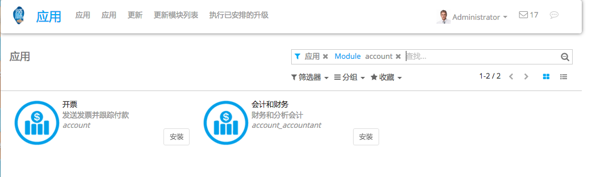
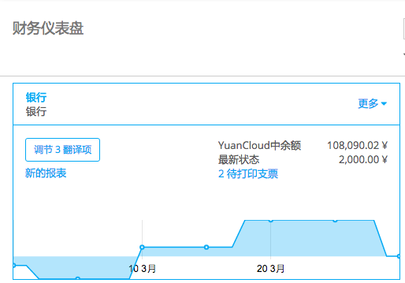
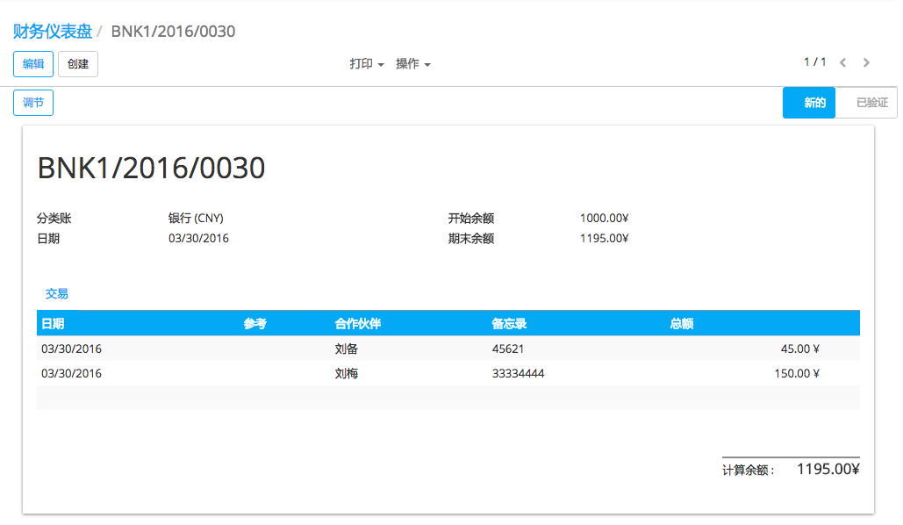
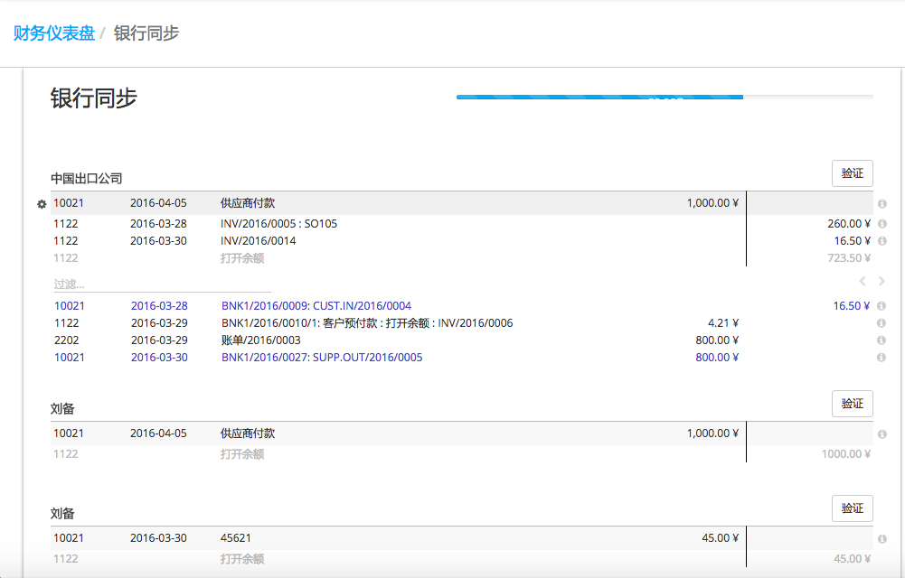
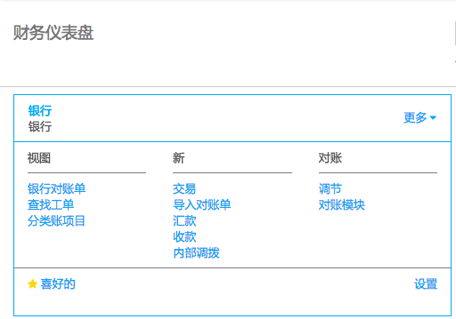
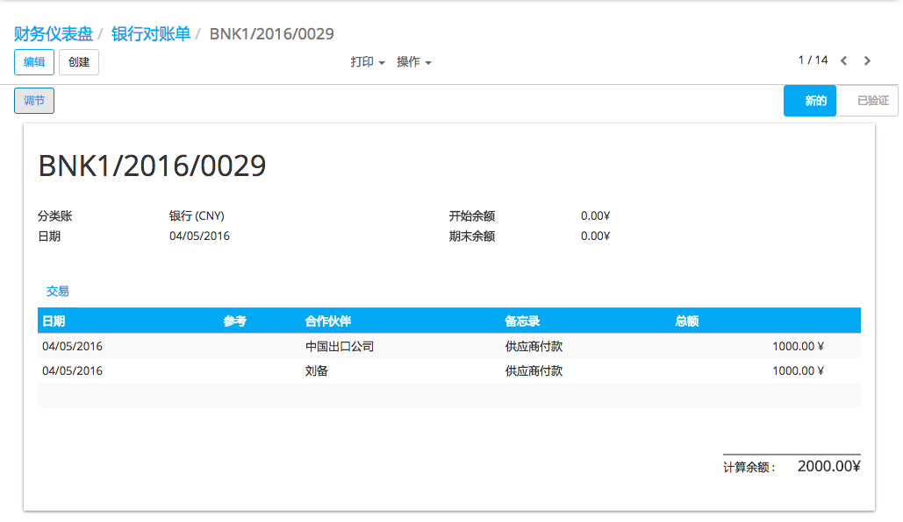

概述
YuanCloud,可以导入你的银行对账单,同步与你的银行还可以手动登记您的银行对账单。
配置
登记发票不需要任何特殊配置。所有您需要做的就是安装会计软件。
手工登记银行对账单
创建银行对账单
在仪表板中,点击相关银行账的按钮* 新对账单 [UNKNOWN NODE problematic]。如果一些核销需要完成,新的对账单链接将出现。
只需在你的银行对账单中填写字段的信息。参考信息可以手动填写或者不填。我们建议填写合作伙伴来简化核销进程。
期初余额和期末余额之间的差异该等于计算的余额。
做完这些后, 点击 保存.
调节银行对账单
你可以选择直接核销对账单,通过单击按钮| manual04
你也可以在仪表板上开始核销进程, 通过点击**Reconcile # Items**。
点击* Validate 核销你的银行对账单。如果没有业务伙伴信息,YuanCloud会让你 **select a partner*。
小技巧
点击按ctrl enter核销表上所有平衡平衡的项。
从对账关闭银行对账单
如果余额正确,你可以直接关闭核销,点击| manual07 [UNKNOWN NODE problematic]。
否则,单击| manual08 [UNKNOWN NODE problematic]打开对账单并纠正这个问题。
关闭银行对账单
在会计仪表板,点击银行账的更多按钮,然后点击银行对账单。
关闭银行对账单,只需点击**Validate**。
